LL Buchanan Lake
The lake area....
As to the matter of fish: Certain characteristics leave the lake's fish potential not admirable, beyond the carp that have survived in the involved gravel ponds since the early days. That is part of the reason the lake is being emphasized as a viewable waterfowl habitat and an arboretum. Other recreational opportunities are limited by several characteristics of the lake, much to the delight of the birds and animals.
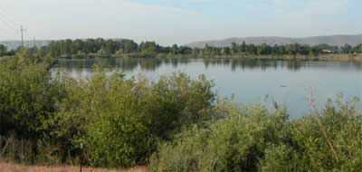
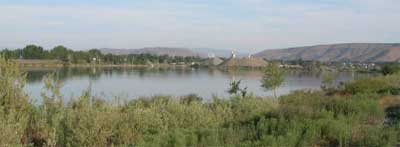
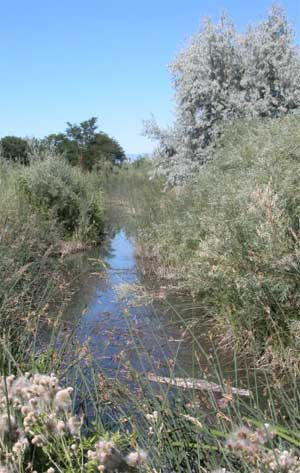
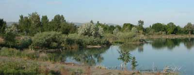
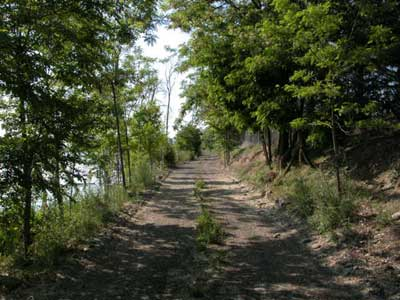
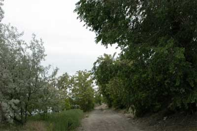
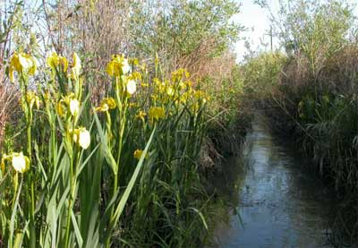
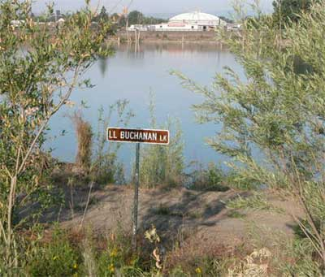
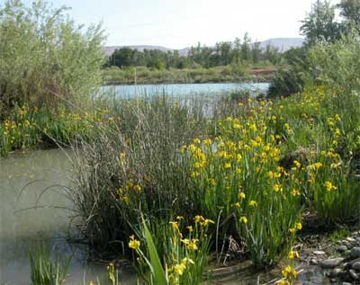
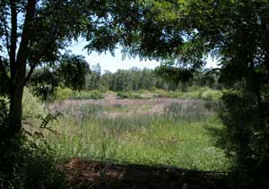
The photo on the left is of an old settling pond at the southeast corner of the lake. It has water when the Yakima River is unusually high or the beaver dam up the flood gate through the dike. A small waterway from Sarge Hubbard Park flows out through the flood gate.
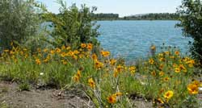
The public foot path on the river dike, between the river and the Swan Pond in the foreground and LL Buchanan Lake in the background....
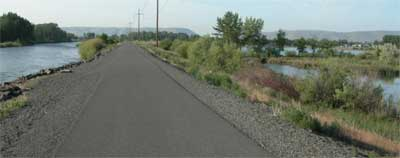
The Swan Pond (an old settling pond) at the northeast corner of the lake.....
2007 Report.... Photos below are from a mix of years. In 2007 Central Premix extended the irrigation system along the top of the dirt berm on the west side of the Swan Pond (last photo on this page) to facilitate more trees and shrubbery beneficial to wildlife and visual esthetics. The swan pond is the home of the beaver. It consists of two water areas divided by a beaver dam and associated vegetation. The mowed grass area is Sarge Hubbard Park on the north boundary.
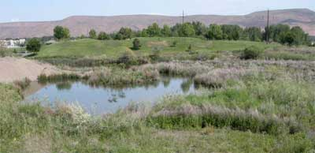
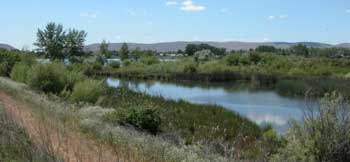
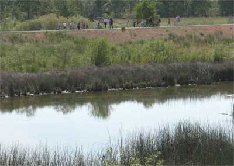
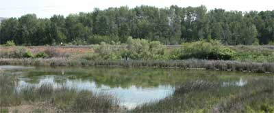
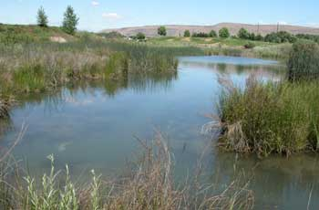
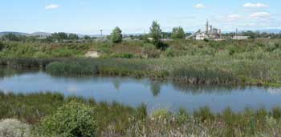
Barney's Island
Betty's Island-1
Betty's Island-2
Betty's Island-3
Betty's Island-4
Betty's Island-5
Betty's Island-6
Pebbles Island
Aerial Photos
Neighbors
History
Swans
Birds
Trees
Trees-2
Trees-3
Links